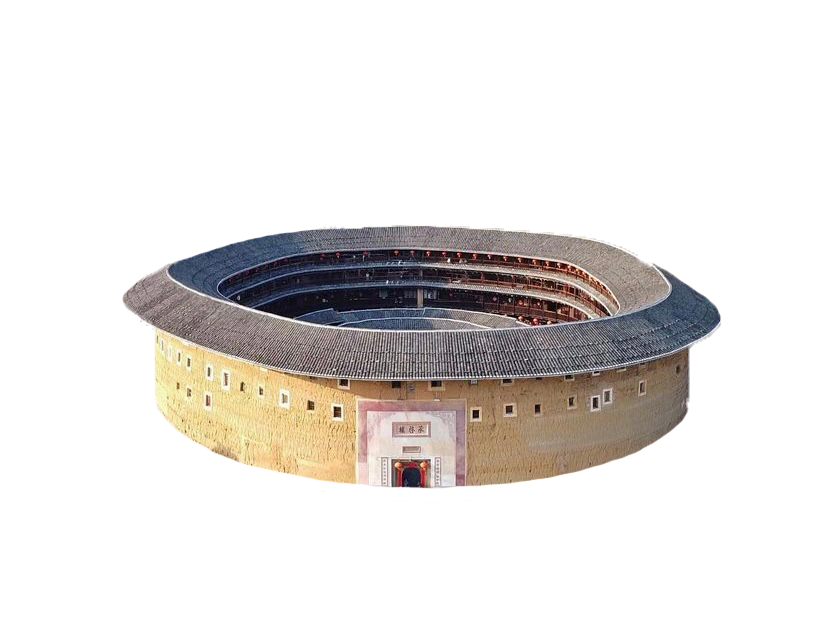
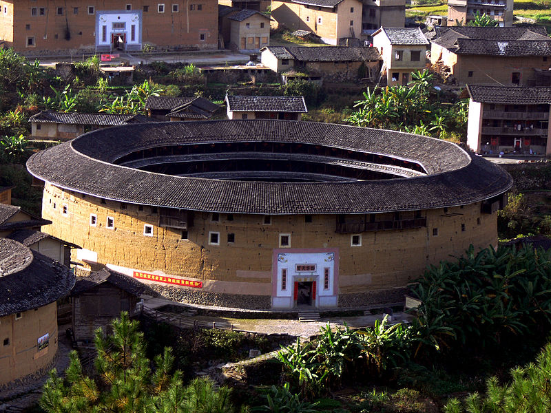
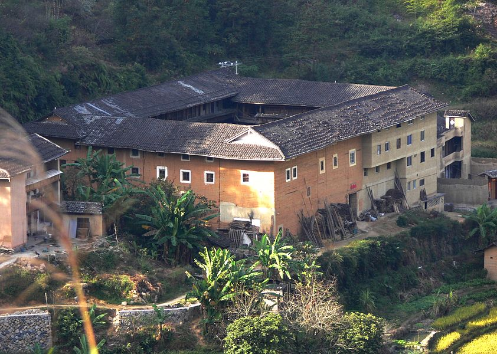
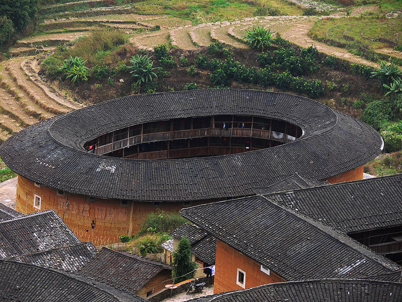

Fujian Tulou is a kind of giant enclosed building in Fujian Province, which uses unprocessed raw earth as a load-bearing wall and looks like it encloses the open interior, so the word "enclosed" or "earth" is used to describe this kind of building.
Its function is to house four generations in one house and to unite residence and defense, with a total of about 3,000 buildings, mainly located in Yongding District of Longyan City and Nanjing, Zhao'an, Pinghe and Hua'an counties of Zhangzhou City in Fujian Province, China. Fujian Tulou is the characteristic dwelling of Chinese in Southeast China and Southeast Asia, which originated in the late Tang and early Song dynasties and developed into the present layout in the late Ming dynasty, with the number increasing significantly in the Republic of China. Tulou is a compound for the whole family of Han Chinese immigrants from North China and Central China who moved to the South to escape from war, and because of their own security concerns, they strengthened the defensive function of the building. Since dynastic changes always occur periodically in China, this type of building, which is suitable for defense, was invented and quickly spread throughout Fujian and became a part of local residents' lives.
The Fujian Tulou is considered to be one of the major categories of residential buildings in China because of its convenience of being located on the mountain, taking materials from the local area, and encompassing the whole clan.
Name
Until the 1970s, the term "Hakka pavilions" was commonly used in China, and the most famous pavilions, such as Zhenchenglou, Chengqilou, and Tianluokeng, were all inhabited by Hakka people, leading to the misconception that this building was a unique form of Hakka architecture. Subsequent research in mainland China found that Minnan people also lived in Fujian pailou in Zhangzhou and Quanzhou, so it was realized that the prefix "Hakka" was not comprehensive enough for the pailou. The term "Weilong House" is used to refer to the Hakka kind of architecture, which is more narrow in scope.
In Malaysia and Indonesia, the term "wei-lou" is more often used, as the word "earth" has a derogatory meaning in Chinese culture, and is less commonly referred to as a "tulou".
Tulou Category
Classification by building interior structure
The inner corridor style pavilion (Hakka pavilion) is commonly known as "Weilong House": the occupants of the pavilion have units from the ground floor to the top floor, each from the second floor up, with a circular corridor in front of each room and four or five common staircases on each floor. Inner corridor type Tulou is mainly distributed in Yongding County, Fujian Province, where the Hakka people live, also known as Hakka Weirou, represented by Zhencheng Lou in Hukeng Town, Yongding County.
Single-unit type walled building (Minnan walled building). There is no corridor connecting each household on each floor of the unitary earthen floor; the walled building is divided into a set of vertical units, each of which has an independent entrance, an independent courtyard, and an independent staircase for going up and down. The unitary tulou is mainly distributed in the area of southwest Fujian Province where the Minnan folk family lives, also known as Minnan tulou, with Eiyilou in Hua'an County as its representative.
Classification by building shape
If the building is divided according to the shape, it can be divided into a round building, a square building, and a five-feng building.


